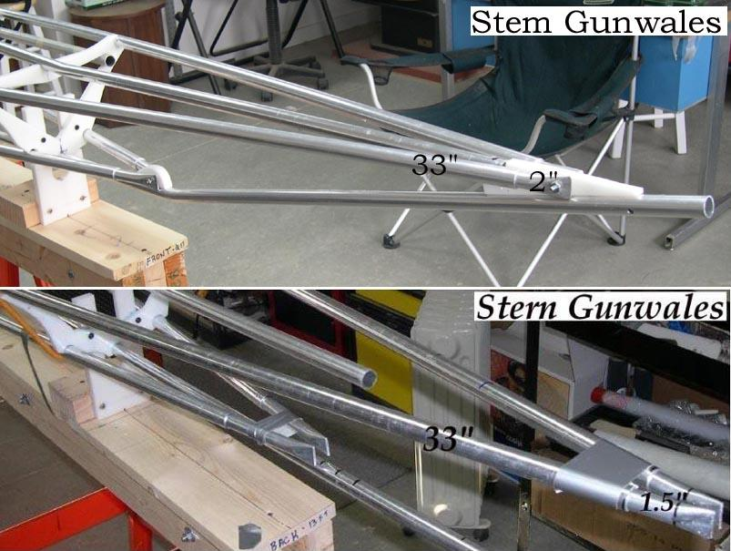

| Stem / Stern Inserts (2 of 5) | Menu Previous Page Next Page |
|
 Marking and Cutting Gunwales - Cut off the bow gunwales 33" from cross section 1. Slide in a 12" insert and allow it to extend 2" beyond the 3/4"gunwale stringer or until there is a 1/2" gap at the two gunwales. Cut off the stern gunwales 33" from cross section 8. Slide in the 12" insert and allow it to extend 1.5" beyond the 3/4" chine stringer or until there is a 1/2" gap at the ends. |
|